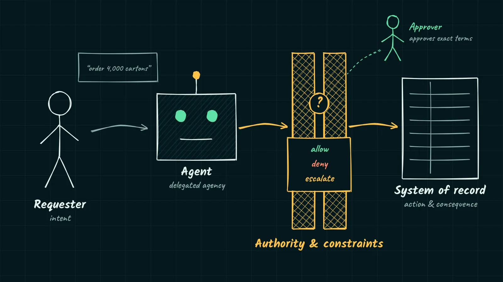

Series · AI agents and learning
Intelligence That Compounds
How an AI agent can learn from the consequences of its decisions, and how to tell whether it really improves.
Start reading →
Blog
Practical essays on how AI agents, enterprise systems and governance fit together, grounded in real business workflows.
Series · AI agents and learning
How an AI agent can learn from the consequences of its decisions, and how to tell whether it really improves.
Series · Neuro-symbolic AI
How language models work with explicit facts, rules, ontologies and planners, and how to tell whether the combination is working.

Series · AI agents and governance
How enterprises decide what AI agents may do, on whose authority, and how to recover when something goes wrong.